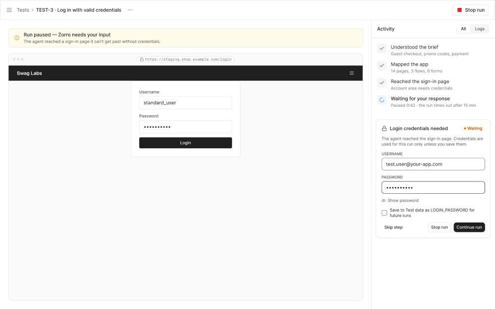
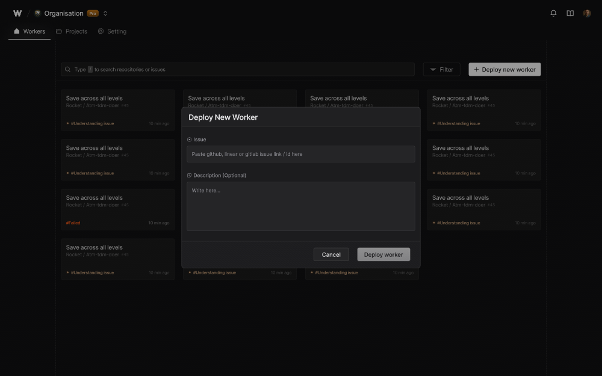

I’m a product designer with a computer science background. I like figuring out why something feels harder to use than it should, then getting into the details of how to make it easier.
I’m currently experimenting with typography and grids. Away from the screen, I might be journaling or collecting references for a room I haven’t built yet.
I designed Aviator from scratch and owned flows for Ludo, cricket and Plinko. Players often missed games in the Games tab, so I explored homepage layouts that put four or five priority games within reach. For Aviator, I focused on large controls and fewer taps during fast rounds.
I managed two designers on the wallet. Together we worked through how to explain cash, tokens and shopping credits, and how to show what happens while a withdrawal is under review.
Zorro
Product redesign
A clearer view of what an AI test is doing.

Project notes
I mapped the fields across tests, bugs and reports, then sketched which information belonged in a table and which needed a detail view. With an investor meeting approaching, I used Claude to explore high-fidelity versions of the selected layouts.
One revised screen handles a run blocked at sign-in. It says why the agent paused and gives the tester a choice to continue with credentials, skip the step or stop the run.
Greptile
Design systems
A new visual identity for an AI code review tool.
Project notes
At Pixelup, I helped bring Greptile’s new brand into its existing product. I explored how teams could scan review activity, read individual conversations and understand billing and paid seats. I worked on the design system alongside these dashboard layouts.
Vertera Health
Patient experience
Guided learning before and after spine surgery.
Project notes
I worked with a small team on Vertera’s patient app. My focus was course layouts. I explored how much information someone needed before starting a lesson or exercise, and how to keep the next step easy to find. I also contributed to pricing and onboarding iterations.
Workers
Product design from scratch
A developer workspace for delegating issues to AI.

Project notes
Workers began as a playground. I mapped its workflow in FigJam, studied tools like Manus and proposed an information architecture to the founder. Once we agreed on the direction, I designed the MVP around launching a worker from an issue, following its progress and inspecting the spec or code diff.
My design workflow
A fresh problem
I start with the brief and sketch what someone came to do. Once the flow makes sense on paper, I explore layouts in Figma and work through the details with the team.
Rapid prototyping
I use a rough sketch to guide a prototype, try the interaction, and revise it before applying the design system.